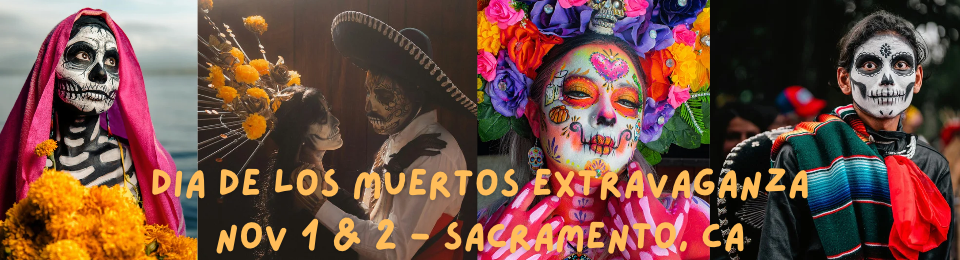
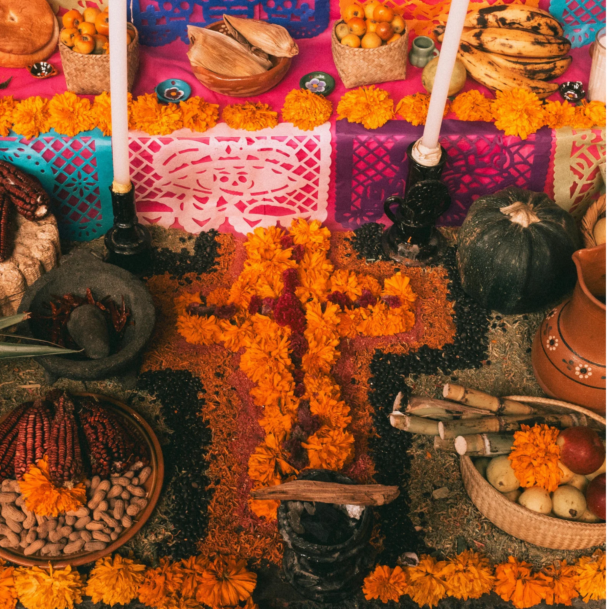
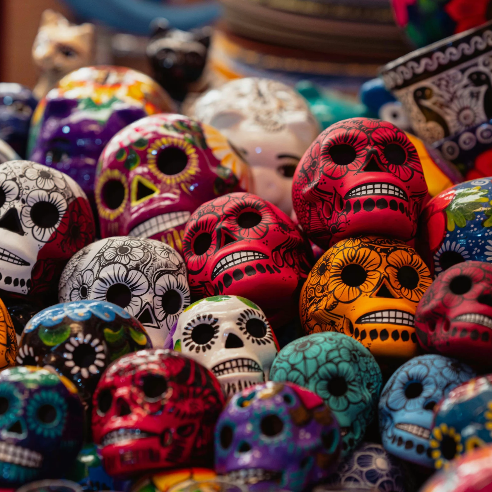
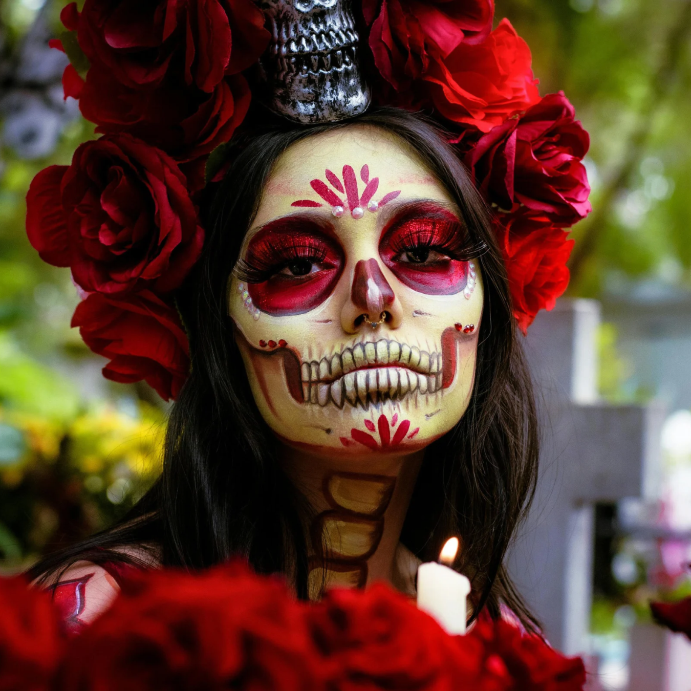

Live Music - Face Painting - Dancing Skeletons - Signing Competition - Best Dressed Competition - Photo Booths - Candle Making - Marigold Picking - Inscent Burning - Grave Visiting - Pan de Muerto cook off- Food Trucks - Drinks for both the living and dead. - & MORE.......


